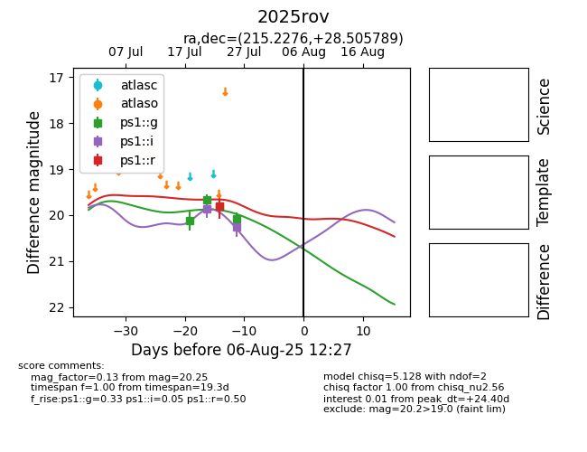

Target 2025rov at 2025-08-06 17:07, see:
YSE: ziggy.ucolick.org/yse/transient_detail/2025rov
alt names
2025rov (yse)
coordinates:
equatorial (ra, dec) = (215.2276,+28.50579)
galactic (l, b) = (42.1362,+70.19726)
photometry
last ps1::g=20.08, ps1::i=20.25, ps1::r=19.81
4 ps1::g, 2 ps1::i, 1 ps1::r detections
